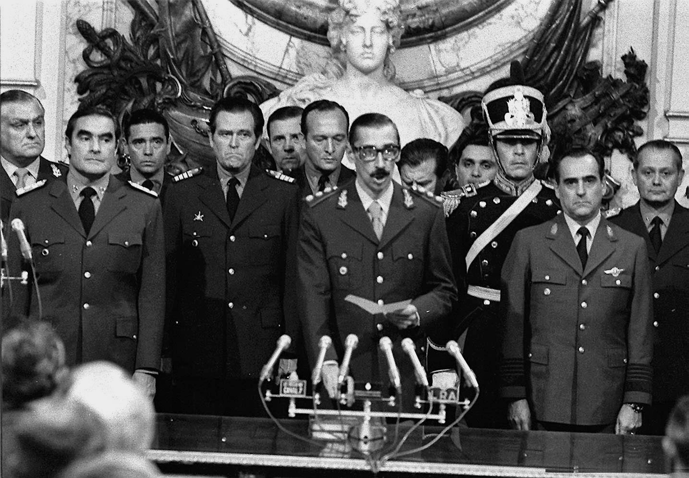
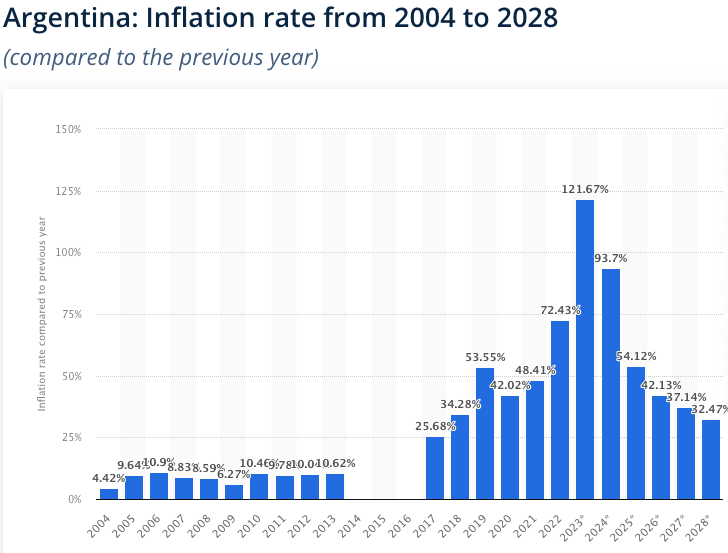

What caused initial inflation in Argentina
Causes lead as far back as the Argentine military dictatorship which lasted from 1976 to 1983. The military dictatorship or junta constantly committed human rights violations against the Argentine people to the point where “los desaparecidos” or the disappeared, referring to people that the Argentine government silenced, became a common term. While facing constant backlash from the Argentine people, in an effort to raise nationalistic sentiment, the military dictatorship started an invasion of the Islas Malvinas, which was currently under British rule as the Falkland Islands. Although the military junta believed that Britain would not put up much of a fight for them, Margaret Thatcher proved otherwise, leading to a 10 week war over the island territory which Argentina inevitably lost. By the end of the military dictatorship, Argentina’s foreign debt had reached 45 billion.
1998 Argentine Great Depression
There were many efforts by Argentine government to stabilize the economy, however things such as government corruption that allowed money laundering, the devaluation of the Brazilian real which made Argentine exports less valuable, and overall financial crisis’ of other Latin American countries made investors and foreign markets uncertain causing them to pull out negated any policies put in place by the government. This eventually led to the early Argentine great depression, taking place from 1998 to 2002. The ongoing financial crisis caused the government to remove fixed exchange rates, which allowed the peso to greatly depreciate in value. Financial crisis was comparable to the American great depression, with widespread unemployment of around 25%, and protests that eventually became riots. Investors and exchange markets pulled out of Argentina, converting their Argentine pesos into more stable currencies, which just made things worse for the peso.

Inflation in Argentina over the past two decades
Inflation has been gradually increasing in Argentina since then, ranging from an average of 10% each year from 2004 - 2013, to going from 25% in 2017 to 72% in 2022. In 2023 however, inflation increased by 121%, which brought the exchange rate of 1 US dollar to Argentine peso from 350 to 800.
